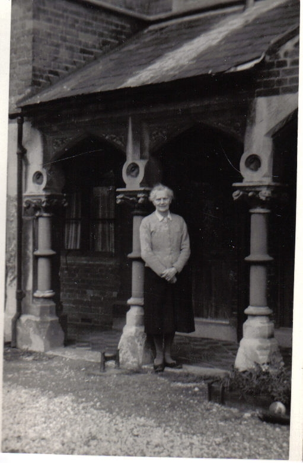
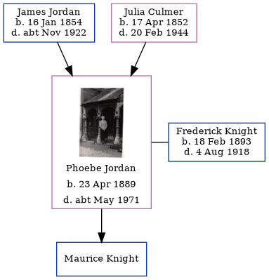

Phoebe May Knight (née Jordan) 1889 - c1971
[ Home ] | [ Calendar ] | [ Surnames Index ] | [ Family History ]The daughter of James Jordan (a horse keeper) and Julia CulmerPhoebe Jordan, the second cousin twice-removed on the mother's side of Nigel Horne, was born in Faversham, Kent, England on Apr 23, 18891,2, was baptized there on May 24, 1889 and also married Frederick Knight (with whom she had 1 child, Maurice, ) there, c. Aug 19174.
Phoebe spent all of her life in Kent, England. Throughout her life, she lived at 2 Mill Place in Faversham on Apr 5, 18915, on Mar 31, 19016, on Sep 29, 19391 (when she was living with her mother, Julia) following the death of her husband on Aug 4, 1918 and on Feb 20, 1944 (the same place as her father had been living on Mar 31, 1901).
She died c. May 1971 in Canterbury, Kent, England3.
Parents
- James was born on Jan 16, 1854
- Julia was born on Apr 17, 1852
Citations
- 1939 Register - Findmypast (was the head of the household)
- England & Wales births 1837-2006 - Findmypast
- England & Wales deaths 1837-2007 - Findmypast
- England & Wales Marriages 1837-2005 - Findmypast
- 1891 England, Wales & Scotland Census - Findmypast (was age 2 and the daughter of the head of the household)
- 1901 England, Wales & Scotland Census - Findmypast (was age 11 and the daughter of the head of the household)
Media
Phoebe May Jordan

1939 Register Transcription - TNA-R39-1715-1715J-013-20
England & Wales births 1837-2006 - BMD/B/1889/2/AZ/000327/009
1891 England, Wales & Scotland Census - GBC/1891/0005793052
England & Wales marriages 1837-2005 - BMD/M/1917/3/AZ/000580/139
England & Wales deaths 1837-2007 - BMD/D/1971/2/AZ/000668/078
1901 England, Wales & Scotland Census - GBC/1901/0006632160
Family Tree
Generated by ged2site. Last updated on Nov 13, 2024